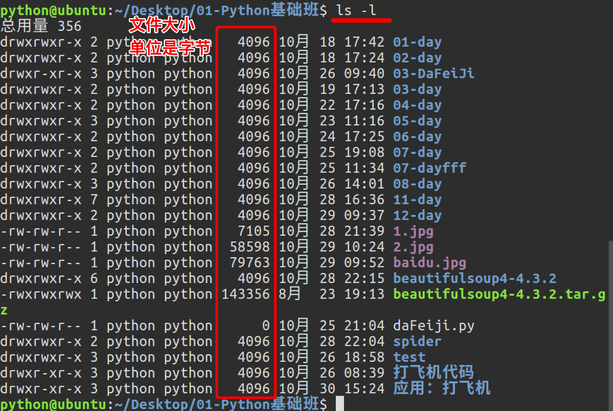
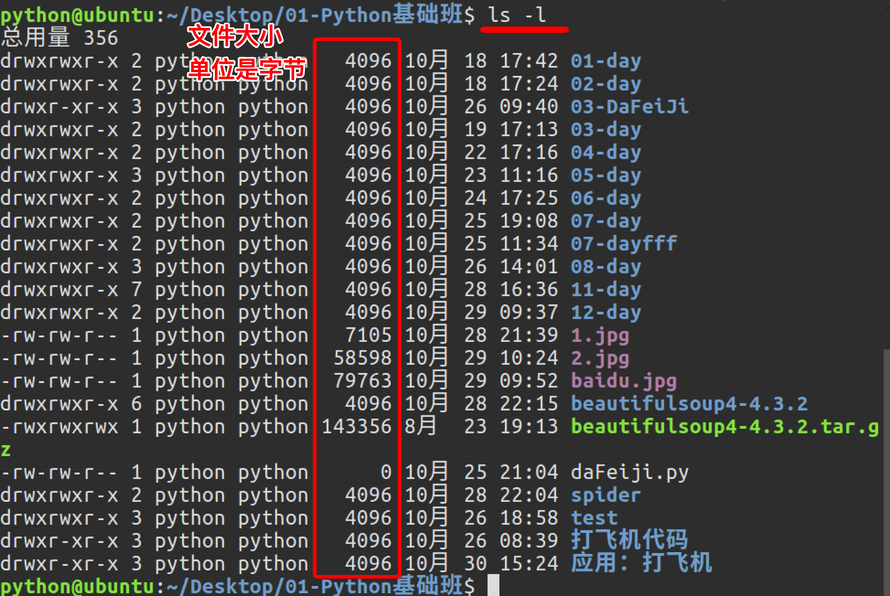

Linux常用命令(ls,clear,cd,pwd)
1.查看文件信息：ls
ls是英文单词list的简写，其功能为列出目录的内容，是用户最常用的命令之一，它类似于DOS下的dir命令。
Linux文件或者目录名称最长可以有265个字符，“.”代表当前目录，“..”代表上一级目录，以“.”开头的文件为隐藏文件，需要用 -a 参数才能显示。
示例:
# 查看当前目录的文件信息
ls .
# 查看上一级目录的文件信息
ls ..
ls常用参数：
| 参数 | 含义 |
|---|---|
| -a | 显示指定目录下所有子目录与文件，包括隐藏文件 |
| -l | 以列表方式显示文件的详细信息 |
| -h | 配合 -l 以人性化的方式显示文件大小 |
 


与DOS下的文件操作类似，在Unix/Linux系统中，也同样允许使用特殊字符来同时引用多个文件名，这些特殊字符被称为通配符。
| 通配符 | 含义 |
|---|---|
| * | 文件代表文件名中所有字符 |
| ls te* | 查找以te开头的文件 |
| ls *html | 查找结尾为html的文件 |
| ？ | 代表文件名中任意一个字符 |
| ls ?.c | 只找第一个字符任意，后缀为.c的文件 |
| ls a.? | 只找只有3个字符，前2字符为a.，最后一个字符任意的文件 |
| [] | [”和“]”将字符组括起来，表示可以匹配字符组中的任意一个。“-”用于表示字符范围。 |
| [abc] | 匹配a、b、c中的任意一个 |
| [a-f] | 匹配从a到f范围内的的任意一个字符 |
| ls [a-f]* | 找到从a到f范围内的的任意一个字符开头的文件 |
| ls a-f | 查找文件名为a-f的文件,当“-”处于方括号之外失去通配符的作用 |
| \ | 如果要使通配符作为普通字符使用，可以在其前面加上转义字符。“?”和“*”处于方括号内时不用使用转义字符就失去通配符的作用。 |
| ls \*a | 查找文件名为*a的文件 |
2. 清屏：clear
clear作用为清除终端上的显示(类似于DOS的cls清屏功能)，也可使用快捷键：Ctrl + l ( “l” 为字母 )。
3.切换工作目录： cd
在使用Unix/Linux的时候，经常需要更换工作目录。cd命令可以帮助用户切换工作目录。Linux所有的目录和文件名大小写敏感
cd后面可跟绝对路径，也可以跟相对路径。如果省略目录，则默认切换到当前用户的主目录。
| 命令 | 含义 |
|---|---|
| cd | 切换到当前用户的主目录(/home/用户目录)，用户登陆的时候，默认的目录就是用户的主目录。 |
| cd ~ | 切换到当前用户的主目录(/home/用户目录) |
| cd . | 切换到当前目录 |
| cd .. | 切换到上级目录 |
| cd - | 可进入上次所在的目录 |
注意:如果路径是从根路径开始的，则路径的前面需要加上 “ / ”，如 “ /mnt ”，通常进入某个目录里的文件夹，前面不用加 “ / ”。
4.显示当前路径：pwd
使用pwd命令可以显示当前的工作目录，该命令很简单，直接输入pwd即可，后面不带参数。
# 显示当前路径
parallels@parallels-vm:~/Desktop$ pwd
/home/parallels/Desktop
# 切换到itheima目录下
parallels@parallels-vm:~/Desktop$ cd itheima/
# 显示当前路径
parallels@parallels-vm:~/Desktop/itheima$ pwd
/home/parallels/Desktop/itheima
总结:
ls命令是查看当前目录的下文件列表内容
ls -l 和 ll 很相似，只是 ll 显示隐藏文件
/home/python 的读法:
/ -> 根目录下
/home -> home文件下
/python -> python文件里面
各种杠总结:
/ 斜杠
\反斜杠
-横杠
_ 下划线
~用户家目录
相对路径： 从当前目录说起
绝对路径： 从根目录(/)说起 , 以/开头的就是绝对路径